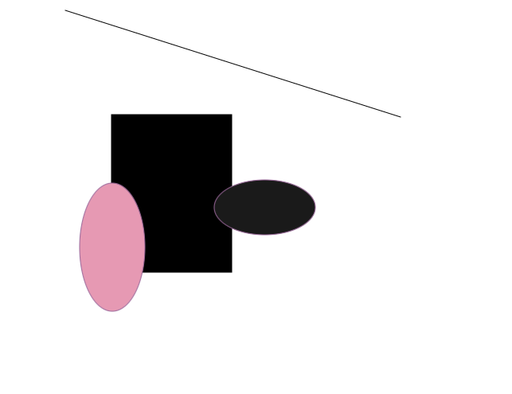
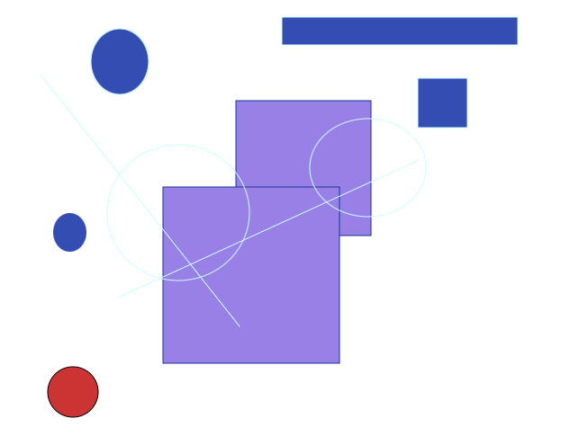

ShapeDraw
This program lets users create images using shapes.
The program starts with a blank image on the right on which the user can add shapes.
In drawing mode, there are multiple shapes users can choose and they can change the line colour and/or the interior colour. Users can also choose whether or not they want a border around the shape or if they only want the unfilled border.
The user can also activate selection mode if they want to modify the shapes they added. In selection mode, users can click a shape to select it, move it on the image, resize it, put it forward or back or erase it.
In the menu, the user can save their work, open a previous image to modify it, open a blank image to start something new or export their image as a png.
The game was programmed in Java using the GUI library JavaFX.

